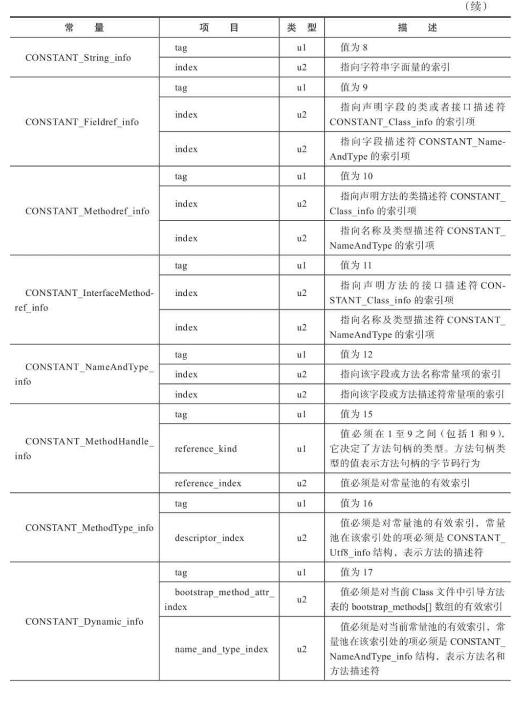
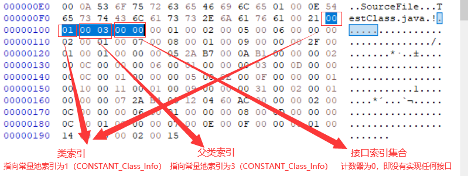

第6章 类文件结构
第6章 类文件结构
无关性的基石
实现语言无关性的基础仍然是虚拟机和字节码存储格式。Java虚拟机不与包括Java语言在内的任何程序语言绑定，它只与“Class文件”这种特定的二进制文件格式所关联，Class文件中包含了Java虚拟机指令集、符号表以及若干其他辅助信息。
基于安全方面的考虑，《Java虚拟机规范》中要求在Class文件必须应用许多强制性的语法和结构化约束，但图灵完备的字节码格式，保证了任意一门功能性语言都可以表示为一个能被Java虚拟机所接受的有效的Class文件。
作为一个通用的、与机器无关的执行平台，任何其他语言的实现者都可以将Java虚拟机作为他们语言的运行基础，以Class文件作为他们产品的交付媒介。
Java语言中的各种语法、关键字、常量变量和运算符号的语义最终都会由多条字节码指令组合来表达，这决定了字节码指令所能提供的语言描述能力必须比Java语言本身更加强大才行。
Class类文件的结构
Java技术能够一直保持着非常良好的向后兼容性，Class文件结构的稳定功不可没，任何一门程序语言能够获得商业上的成功，都不可能去做升级版本后，旧版本编译的产品就不再能够运行这种事情。
任何一个Class文件都对应着唯一的一个类或接口的定义信息，但是反过来说，类或接口并不一定都得定义在文件里（譬如类或接口也可以动态生成，直接送入类加载器中）。本章中，作者只是通俗地将任意一个有效的类或接口所应当满足的格式称为“Class文件格式”，实际上它完全不需要以磁盘文件的形式存在。
Class文件是一组以8个字节为基础单位的二进制流，各个数据项目严格按照顺序紧凑地排列在文件之中，中间没有添加任何分隔符，这使得整个Class文件中存储的内容几乎全部是程序运行的必要数据，没有空隙存在。
当遇到需要占用8个字节以上空间的数据项时，则会按照高位在前[^1]的方式分割成若干个8个字节进行存储。
根据《Java虚拟机规范》的规定，Class文件格式采用一种类似于C语言结构体的伪结构来存储数据，这种伪结构中只有两种数据类型：“无符号数”和“表”。
class文件数据类型（无符号数和表）
- 无符号数（可以理解为字面量？）
- 属于基本的数据类型，以u1、u2、u4、u8来分别代表1个字节、2个字节、4个字节和8个字节的无符号数，无符号数可以用来描述数字、索引引用、数量值或者按照UTF-8编码构成字符串值。
- 表
- 由多个无符号数或者其他表作为数据项构成的复合数据类型，为了便于区分，所有表的命名 都习惯性地以“_info”结尾。表用于描述有层次关系的复合结构的数据，整个Class文件本质上也可以视作是一张表，这张表由表6-1所示的数据项按严格顺序排列构成。
[^1]: 这种顺序称为“Big-Endian”，具体顺序是指按高位字节在地址最低位，最低字节在地址最高位来存 储数据，它是SPARC、PowerPC等处理器的默认多字节存储顺序，而x86等处理器则是使用了相反的“Little-Endian”顺序来存储数据。
表6-1 Class文件格式
无论是无符号数还是表，当需要描述同一类型但数量不定的多个数据时，经常会使用一个前置的容量计数器加若干个连续的数据项的形式，这时候称这一系列连续的某一类型的数据为某一类型的“集合”。
魔数与Class文件的版本
每个Class文件的头4个字节被称为魔数（Magic Number），它的唯一作用是确定这个文件是否为一个能被虚拟机接受的Class文件。
不仅是Class文件，很多文件格式标准中都有使用魔数来进行身份识别的习惯，譬如图片格式，如GIF或者JPEG等在文件头中都存有魔数。使用魔数而不是扩展名来进行识别主要是基于安全考虑，因为文件扩展名可以随意改动。
Class文件的魔数取得很有“浪漫气息”，值为0xCAFEBABE（咖啡宝贝？）。
紧接着魔数的4个字节存储的是Class文件的版本号：第5和第6个字节是次版本号（Minor Version），第7和第8个字节是主版本号（Major Version）。
《Java虚拟机规范》在Class文件校验部分明确要求了即使文件格式并未发生任何变化，虚拟机也必须拒绝执行超过其版本号的Class文件。
1 | package com.dw.six_class_structure; |
常量池
紧接着主、次版本号之后的是常量池入口，常量池可以比喻为Class文件里的资源仓库，它是Class文件结构中与其他项目关联最多的数据，通常也是占用Class文件空间最大的数据项目之一，另外，它还是在Class文件中第一个出现的表类型数据项目。
由于常量池中常量的数量是不固定的，所以在常量池的入口需要放置一项u2类型的数据，代表常量池容量计数值（constant_pool_count）。
这个容量计数是从1而不是0开始的，如图6-3所示，常量池容量（偏移地址：0x00000008）为十六进制数0x0016，即十进制的22，这就代表常量池中有21项常量，索引值范围为1～21。
Class文件结构中只有常量池的容量计数是从1开始，对于其他集合类型，包括接口索引集合、字段表集合、方法表集合等的容量计数都与一般习惯相同，是从0开始。
常量池中主要存放两大类常量：
- 字面量（Literal）： 字面量比较接近于Java语言层面的常量概念，如文本字符串、被声明为final的常量值。
- 符号引用（Symbolic References）：符号引用则属于编译原理方面的概念，主要包括下面几类常量：
- 被模块导出或者开放的包（Package）
- 类和接口的全限定名（Fully Qualified Name）
- 字段的名称和描述符（Descriptor）
- 方法的名称和描述符
- 方法句柄和方法类型（Method Handle、Method Type、Invoke Dynamic）
- 动态调用点和动态常量（Dynamically-Computed Call Site、Dynamically-Computed Constant）
1 | Constant pool: |
Java代码在进行Javac编译的时候，并不像C和C++那样有“连接”这一步骤，而是在虚拟机加载Class文件的时候进行动态连接（具体见第7章）。也就是说，在Class文件中不会保存各个方法、字段最终在内存中的布局信息，这些字段、方法的符号引用不经过虚拟机在运行期转换的话是无法得到真正的内存入口地址，也就无法直接被虚拟机使用的。当虚拟机做类加载时，将会从常量池获得对应的符号引用，再在类创建时或运行时解析、翻译到具体的内存地址之中。
常量池中每一项常量都是一个表，最初常量表中共有11种结构各不相同的表结构数据，后来为了更好地支持动态语言调用，额外增加了4种动态语言相关的常量[^2]，为了支持Java模块化系统（Jigsaw），又加入了CONSTANT_Module_info和CONSTANT_Package_info两个常量，所以截至JDK 13，常量表中分别有17种不同类型的常量。
这17类表都有一个共同的特点，表结构起始的第一位是个u1类型的标志位（tag，取值见表6-3中标志列），代表着当前常量属于哪种常量类型。17种常量类型所代表的具体含义如表6-3所示。
之所以说常量池是最烦琐的数据，是因为这17种常量类型各自有着完全独立的数据结构，两两之间并没有什么共性和联系，因此只能逐项进行讲解。
如图：
常量池的第一项常量，它的标志位（偏移地址：0x0000000A）是0x07，查表6-3的标志列可知这个常量属于CONSTANT_Class_info类型，此类型的常量代表一个类或者接口的符号引用。
CONSTANT_Class_info的结构比较简单，如表6-4所示。
tag是标志位，它用于区分常量类型；
name_index是常量池的索引值，它指向常量池中一个 CONSTANT_Utf8_info类型常量，此常量代表了这个类（或者接口）的全限定名，本例中的name_index值（偏移地址：0x0000000B）为0x0002，也就是指向了常量池中的第二项常量。继续从图6-3中查找第二项常量，它的标志位（地址：0x0000000D）是0x01，查表6-3可知确实是一个CONSTANT_Utf8_info类型的常量。CONSTANT_Utf8_info类型的结构如表6-5所示。
length值说明了这个UTF-8编码的字符串长度是多少字节，它后面紧跟着的长度为length字节的连续数据是一个使用UTF-8缩略编码表示的字符串。
- UTF-8缩略编码与普通UTF-8编码的区别是：
- 从’\u0001’到’\u007f’之间的字符（相当于1～127的ASCII码）的缩略编码使用一个字节表示
- 从’\u0080’到’\u07ff’之间的所有字符的缩略编码用两个字节表示
- 从’\u0800’开始到’\uffff’之间的所有字符的缩略编码就按照普通UTF-8编码规则使用三个字节表示。
顺便提一下，由于Class文件中方法、字段等都需要引用CONSTANT_Utf8_info型常量来描述名称，所以CONSTANT_Utf8_info型常量的最大长度也就是Java中方法、字段名的最大长度。
而这里的最大长度就是length的最大值，既u2类型能表达的最大值65535。所以Java程序中如果定义了超过64KB英文字符的变量或方法名，即使规则和全部字符都是合法的，也会无法编译。
本例中这个字符串的length值为0x0024，也就是长36个字节，往后36个字节正好都在1～127的ASCII码范围以内，内容为“com/dw/six_class_structure/TestClass”
专门用于分析Class文件字节码的工具：javap
代码清单6-2 使用javap命令输出常量表
1 | E:\java_work_space\java_se\deep-understanding-jvm\bin\com\dw\six_class_structure>javap -verbose TestClass |
从代码清单6-2中可以看到，计算机已经帮我们把整个常量池的21项常量都计算了出来，并且第 1、2项常量的计算结果与我们手工计算的结果完全一致。仔细看一下会发现，其中有些常量似乎从来没有在代码中出现过，如“I” “V” “<init>” “LineNumberTable” “LocalVariableTable”等，这些看起来在源代码中不存在的常量是哪里来的？
这部分常量的确不来源于Java源代码，它们都是编译器自动生成的，会被后面即将讲到的字段表（field_info）、方法表（method_info）、属性表（attribute_info）所引用，它们将会被用来描述一些不方便使用“固定字节”进行表达的内容，譬如描述方法的返回值是什么，有几个参数，每个参数的类型是什么。
因为Java中的“类”是无穷无尽的，无法通过简单的无符号数来描述一个方法用到了什么类，因此在描述方法的这些信息时，需要引用常量表中的符号引用进行表达。这部分内容将在后面进一步详细阐述。最后，笔者将17种常量项的结构定义总结为表6-6。
表6-6 常量池中的17种数据类型的结构总表

[^2]: JDK 7时增加了前三种：CONSTANT_MethodHandle_info、CONSTANT_MethodType_info和CONSTANT_InvokeDynamic_info。出于性能和易用性的考虑（JDK 7设计时已经考虑到，预留了17个 常量标志位），在JDK 11中又增加了第四种常量CONSTANT_Dynamic_info。本章不会涉及这4种新增的类型，留待第8章介绍字节码执行和方法调用时详细讲解。
访问标志
在常量池结束之后，紧接着的2个字节代表访问标志（access_flags），这个标志用于识别一些类或者接口层次的访问信息
包括：这个Class是类还是接口；是否定义为public类型；是否定义为abstract类型；如果是类的话，是否被声明为final；
表6-7 访问标志
access_flags中一共有16个标志位可以使用，当前只定义了其中9个[^3]，没有使用到的标志位要求一律为零。以代码清单6-1中的代码为例，TestClass是一个普通Java类，不是接口、枚举、注解或者模块，被public关键字修饰但没有被声明为final和abstract，并且它使用了JDK 1.2之后的编译器进行编译，因此它的ACC_PUBLIC、ACC_SUPER标志应当为真，而ACC_FINAL、ACC_INTERFACE、 ACC_ABSTRACT、ACC_SYNTHETIC、ACC_ANNOTATION、ACC_ENUM、ACC_MODULE这七个标志应当为假，因此它的access_flags的值应为：0x0001|0x0020=0x0021。从图6-5中看到，access_flags标志（偏移地址：0x000000EF）的确为0x0021。
[^3]: 在原始的《Java虚拟机规范》初版中，只定义了开头5种标志。JDK 5中增加了后续3种。这些标志 为在JSR-202规范之中声明，是对《Java虚拟机规范》第2版的补充。JDK 9发布之后，增加了第9种。
类索引、父类索引与接口索引集合
类索引（this_class）和父类索引（super_class）都是一个u2类型的数据，而接口索引集合 （interfaces）是一组u2类型的数据的集合，Class文件中由这三项数据来确定该类型的继承关系。
类索引用于确定这个类的全限定名，父类索引用于确定这个类的父类的全限定名。
由于Java语言不允许多重继承，所以父类索引只有一个，除了java.lang.Object之外，所有的Java类都有父类，因此除了java.lang.Object外，所有Java类的父类索引都不为0。
接口索引集合就用来描述这个类实现了哪些接口，这些被实现的接口将按implements关键字（如果这个Class文件表示的是一个接口，则应当是extends关键字）后的接口顺序从左到右排列在接口索引集合中。
类索引、父类索引和接口索引集合都按顺序排列在访问标志之后，类索引和父类索引用两个u2类型的索引值表示，它们各自指向一个类型为CONSTANT_Class_info的类描述符常量，通过CONSTANT_Class_info类型的常量中的索引值可以找到定义在CONSTANT_Utf8_info类型的常量中的全限定名字符串。图6-6演示了代码清单6-1中代码的类索引查找过程。
对于接口索引集合，入口的第一项u2类型的数据为接口计数器（interfaces_count），表示索引表的容量。如果该类没有实现任何接口，则该计数器值为0，后面接口的索引表不再占用任何字节。

从偏移地址0x0000000FF开始的3个u2类型的值分别为0x0001、0x0003、0x0000，也就是类索引为1，父类索引为3，接口索引集合大小为0。
1 | Constant pool: |
字段表集合
字段表（field_info）用于描述接口或者类中声明的变量。
Java语言中的“字段”（Field）包括类级变量（静态变量）以及实例级变量，但不包括在方法内部声明的局部变量。
字段可以包括的修饰符有
- 字段的作用域（public、private、protected修饰 符）
- 是实例变量还是类变量（static修饰符）
- 可变性（final）
- 并发可见性（volatile修饰符，是否强制从主内存读写）
- 可否被序列化（transient修饰符）
- 字段数据类型（基本类型、对象、数组）
- 字段名称
上述这些信息中，各个修饰符都是布尔值，要么有某个修饰符，要么没有，很适合使用标志位来表示。
而字段叫做什么名字、字段被定义为什么数据类型，这些都是无法固定的，只能引用常量池中的常量来描述。
表6-8中列出了字段表的最终格式。

字段修饰符放在access_flags项目中，它与类中的access_flags项目是非常类似的，都是一个u2的数据类型，其中可以设置的标志位和含义如表6-9所示。
很明显，由于语法规则的约束：
- ACC_PUBLIC、ACC_PRIVATE、ACC_PROTECTED三个标志最多只能选择其一
- ACC_FINAL、ACC_VOLATILE不能同时选择
- 接口之中的字段必须有ACC_PUBLIC、ACC_STATIC、ACC_FINAL标志
这些都是由Java本身的语言规则所导致的。
跟随access_flags标志的是两项索引值：
name_index（字段的简单名称）
descriptor_index（字段和方法的描述符）
它们都是对常量池项的引用，分别代表着字段的简单名称以及字段和方法的描述符。
字段和方法的描述符
用来描述字段的数据类型、方法的参数列表（包括数量、类型以及顺序）和返回值。
根据描述符规则，
- 基本数据类型（byte、char、double、float、int、long、short、boolean）以及代表无返回值的void类型都用一个大写字符来表示，
- 而对象类型则用字符L加对象的全限定名来表示，详见表6-10。
注：void类型在《Java虚拟机规范》之中单独列出为“VoidDescriptor”，作者为了结构统一，将其列 在基本数据类型中一起描述。
对于数组类型，每一维度将使用一个前置的==“[”==字符来描述，如一个定义为“java.lang.String[][]”类型的二维数组将被记录成“[[Ljava/lang/String；”，一个整型数组“int[]”将被记录成“[I”。
用描述符来描述方法时，按照先参数列表、后返回值的顺序描述，参数列表按照参数的严格顺序放在一组小括号“()”之内。
如
- 方法void inc()的描述符为“()V”，
- 方法java.lang.String toString()的描述符为“()Ljava/lang/String；”，
- 方法int indexOf(char[]source，int sourceOffset，int sourceCount，char[]target，int targetOffset，int targetCount，int fromIndex)的描述符为“([CII[CIII)I”。
对于代码清单6-1所编译的TestClass.class文件来说，
- 字段表集合从地址0x00000105开始，第一个u2类型的数据为容量计数器fields_count，如图6-8所示，其值为0x0001，说明这个类只有一个字段表数据。
- 接下来紧跟着容量计数器的是access_flags标志，值为0x0002，代表private修饰符的ACC_PRIVATE标志位为真（ACC_PRIVATE标志的值为0x0002），其他修饰符为假。
- 代表字段名称的name_index的值为0x0005，从代码清单6-2列出的常量表中可查得第五项常量是一个CONSTANT_Utf8_info类型的字符串，其值为“m”，
- 代表字段描述符的descriptor_index的值为0x0006，指向常量池的字符串“I”。
根据这些信息，我们可以推断出原代码定义的字段为“private int m；”。
图6-8 字段表结构实例
字段表所包含的固定数据项目到descriptor_index为止就全部结束了，不过在descriptor_index之后跟随着一个属性表集合，用于存储一些额外的信息，字段表可以在属性表中附加描述零至多项的额外信息。对于本例中的字段m，它的属性表计数器为0，也就是没有需要额外描述的信息，但是，如果将字段m的声明改为“final static int m=123；”，那就可能会存在一项名称为ConstantValue的属性，其值指向常量123。
字段表集合中不会列出从父类或者父接口中继承而来的字段，但有可能出现原本Java代码之中不存在的字段，
- 譬如在内部类中为了保持对外部类的访问性，编译器就会自动添加指向外部类实例的字段。
- 另外，在Java语言中字段是无法重载的，两个字段的数据类型、修饰符不管是否相同，都必须使用不一样的名称，但是对于Class文件格式来讲，只要两个字段的描述符不是完全相同，那字段重名就是合法的。
方法表集合
Class文件存储格式中对方法的描述与对字段的描述采用了几乎完全一致的方式，方法表的结构如同字段表一样，依次包括
- 访问标志（access_flags）、
- 名称索引（name_index）、
- 描述符索引（descriptor_index）、
- 属性表集合（attributes）几项，
如表6-11所示。这些数据项目的含义也与字段表中的非常类似，仅在访问标志和属性表集合的可选项中有所区别。
因为volatile关键字和transient关键字不能修饰方法，所以方法表的访问标志中没有了ACC_VOLATILE标志和ACC_TRANSIENT标志。与之相对，synchronized、native、strictfp和abstract关键字可以修饰方法，方法表的访问标志中也相应地增加了ACC_SYNCHRONIZED、ACC_NATIVE、ACC_STRICTFP和ACC_ABSTRACT标志。
对于方法表，所有标志位及其取值可参见表6-12。
方法的定义可以通过访问标志、名称索引、描述符索引来表达清楚，但方法里面的代码去哪里了？方法里的Java代码，经过Javac编译器编译成字节码指令之后，存放在方法属性表集合中一个名为“Code”的属性里面，属性表作为Class文件格式中最具扩展性的 一种数据项目，将在下一节中详细讲解。
与字段表集合相对应地，如果父类方法在子类中没有被重写（Override），方法表集合中就不会出现来自父类的方法信息。
但同样地，有可能会出现由编译器自动添加的方法，最常见的便是类构造器“<clinit>()”方法和实例构造器“<init>()”方法。
在Java语言中，要重载（Overload）一个方法，除了要与原方法具有相同的简单名称之外，还要求必须拥有一个与原方法不同的特征签名^4。
特征签名是指一个方法中各个参数在常量池中的字段符号引用的集合，也正是因为返回值不会包含在特征签名之中，所以Java语言里面是无法仅仅依靠返回值 的不同来对一个已有方法进行重载的。
但是在Class文件格式之中，特征签名的范围明显要更大一些，只要描述符不是完全一致的两个方法就可以共存。也就是说，如果两个方法有相同的名称和特征签名，但返回值不同，那么也是可以合法共存于同一个Class文件中的。
属性表集合
属性表（attribute_info）在前面的讲解之中已经出现过数次，
- Class文件、
- 字段表、
- 方法表
都可以携带自己的属性表集合，以描述某些场景专有的信息。
与Class文件中其他的数据项目要求严格的顺序、长度和内容不同，属性表集合的限制稍微宽松一些，不再要求各个属性表具有严格顺序，并且《Java虚拟机规范》允许只要不与已有属性名重复，任何人实现的编译器都可以向属性表中写入自己定义的属性信息，Java虚拟机运行时会忽略掉它不认识的属性。
为了能正确解析Class文件，《Java虚拟机规范》最初只预定义了9项所有Java虚拟机实现都应 当能识别的属性，而在最新的《Java虚拟机规范》的Java SE 12版本中，预定义属性已经增加到29项，这些属性具体见表6-13。后文中将对这些属性中的关键的、常用的部分进行讲解。
表6-13 虚拟机规范预定义的属性
对于每一个属性，它的名称都要从常量池中引用一个CONSTANT_Utf8_info类型的常量来表示，而属性值的结构则是完全自定义的，只需要通过一个u4的长度属性去说明属性值所占用的位数即可。
一个符合规则的属性表应该满足表6-14中所定义的结构。
1.Code属性 (★★★)
Java程序方法体里面的代码经过Javac编译器处理之后，最终变为字节码指令存储在Code属性内。
Code属性出现在方法表的属性集合之中，但并非所有的方法表都必须存在这个属性，譬如接口或者抽象类中的方法就不存在Code属性，如果方法表有Code属性存在，那么它的结构将如表6-15所示。
attribute_name_index 与 attribute_length
attribute_name_index是一项指向CONSTANT_Utf8_info型常量的索引，此常量值固定为“Code”，它代表了该属性的属性名称，attribute_length指示了属性值的长度，由于属性名称索引与属性长度一共为6个字节，所以属性值的长度固定为整个属性表长度减去6个字节。
max_stack代表了操作数栈（Operand Stack）深度的最大值。
- 在方法执行的任意时刻，操作数栈都不会超过这个深度。虚拟机运行的时候需要根据这个值来分配栈帧（Stack Frame）中的操作栈深度。
max_locals代表了局部变量表所需的存储空间。
- 在这里，max_locals的单位是变量槽（Slot），变量槽是虚拟机为局部变量分配内存所使用的最小单位。对于byte、char、float、int、short、boolean和 returnAddress等长度不超过32位的数据类型，每个局部变量占用一个变量槽，而double和long这两种64位的数据类型则需要两个变量槽来存放。
- 方法参数（包括实例方法中的隐藏参数“this”）、显式异常处理程序的参数（Exception Handler Parameter，就是try-catch语句中catch块中所定义的异常）、方法体中定义的局部变量都需要依赖局部变量表来存放。
注意，并不是在方法中用了多少个局部变量，就把这些局部变量所占变量槽数量之和作为max_locals的值，操作数栈和局部变量表直接决定一个该方法的栈帧所耗费的内存，不必要的操作数栈深度和变量槽数量会造成内存的浪费。
Java虚拟机的做法是将局部变量表中的变量槽进行重用，当代码执行超出一个局部变量的作用域时，这个局部变量所占的变量槽可以被其他局部变量所使用，Javac编译器会根据变量的作用域来分配变量槽给各个变量使用，根据同时生存的最大局部变量数量和类型计算出max_locals的大小。
code_length和code用来存储Java源程序编译后生成的字节码指令。
- code_length代表字节码长度，code是用于存储字节码指令的一系列字节流。
- 既然叫字节码指令，那顾名思义每个指令就是一个u1类型的单字节，当虚拟机读取到code中的一个字节码时，就可以对应找出这个字节码代表的是什么指令，并且可以知道这条指令后面是否需要跟随参数，以及后续的参数应当如何解析。
我们知道一个u1数据类型的取值范围为0x00～0xFF，对应十进制的0～255，也就是一共可以表达256条指令。目前，《Java虚拟机规范》已经定义了其中约200条编码值对应的指令含义，编码与指令之间的对应关系可查阅本书的附录C“虚拟机字节码指令表[^directive]”。
关于code_length，有一件值得注意的事情，虽然它是一个u4类型的长度值，理论上最大值可以达到2的32次幂，但是《Java虚拟机规范》中明确限制了一个方法不允许超过65535条字节码指令，即它实际只使用了u2的长度，如果超过这个限制，Javac编译器就会拒绝编译。
一般来讲，编写Java代码时只要不是刻意去编写一个超级长的方法来为难编译器，是不太可能超过这个最大值的限制的。
但是，某些特殊情况，例如在编译一个很复杂的JSP文件时，某些JSP编译器会把JSP内容和页面输出的信息归并于一个方法之中，就有可能因为方法生成字节码超长的原因而导致编译失败。
Code属性是Class文件中最重要的一个属性，如果把一个Java程序中的信息分为
- 代码（Code，方法体里面的Java代码）和
- 元数据（Metadata，包括类、字段、方法定义及其他信息）两部分，
那么在整个Class文件里，Code属性用于描述代码，所有的其他数据项目都用于描述元数据。
如图6-10所示，这是上一节分析过的实例构造器“<init>()”方法的Code属性。它的操作数栈的最大深度和本地变量表的容量都为0x0001，字节码区域所占空间的长度为0x0005。虚拟机读取到字节码区域的长度后，按照顺序依次读入紧随的5个字节，并根据字节码指令表翻译出所对应的字节码指令。翻译“2A B7000A B1”的过程为：
图6-10 Code属性结构实例
- 读入2A，查表得0x2A对应的指令为aload_0，这个指令的含义是将第0个变量槽中为reference类型的本地变量推送到操作数栈顶。
- 读入B7，查表得0xB7对应的指令为invokespecial，这条指令的作用是以栈顶的reference类型的数据所指向的对象作为方法接收者，调用此对象的实例构造器方法、private方法或者它的父类的方法。这个方法有一个u2类型的参数说明具体调用哪一个方法，它指向常量池中的一个CONSTANT_Methodref_info类型常量，即此方法的符号引用。
- 读入000A，这是invokespecial指令的参数，代表一个符号引用，查常量池得0x000A对应的常量为实例构造器“<init>()”方法的符号引用。
- 读入B1，查表得0xB1对应的指令为return，含义是从方法的返回，并且返回值为void。这条指令执行后，当前方法正常结束。
代码清单6-4 用Javap命令计算字节码指令 （部分）
1 | #3 = Class #4 // java/lang/Object |
这段字节码虽然很短，但我们可以从中看出它执行过程中的数据交换、方法调用等操作都是基于 栈（操作数栈）的。
Java虚拟机执行字节码应该是基于栈的体系结构。
某些指令（如invokespecial）后面还会带有参数。
在Code属性，实例构造器<init>()和inc()，这两个方法很明显都是没有参数的，为什么Args_size会为1？
而且无论是在参数列表里还是方法体内，都没有定义任何局部变量，那Locals又为什么会等于1？
- Java语言里面的潜规则：在任何实例方法里面，都可以通过“this”关键字访问到此方法所属的对象。
- 这个访问机制对Java程序的编写很重要，而它的实现非常简单，仅仅是通过在Javac编译器编译的时候把对this关键字的访问转变为对一个普通方法参数的访问，然后在虚拟机调用实例方法时自动传入此参数而已。
- 因此在实例方法的局部变量表中至少会存在一个指向当前对象实例的局部变量，局部变量表中也会预留出第一个变量槽位来存放对象实例的引用，所以实例方法参数值从1开始计算。
- 这个处理只对实例方法有效，如果代码清单6-1中的inc()方法被声明为static，那Args_size就不会等于1而是等于0了。
显式异常处理表
异常表对于Code 属性来说并不是必须存在的，如代码清单6-4中就没有异常表生成。
如果存在异常表，那它的格式应如表6-16所示，包含四个字段，这些字段的含义为：
- 如果当字节码从第start_pc行（此处字节码的“行”是一种形象的描述，指的是字节码相对于方法体开始的偏移量，而不是Java源码的行号，下同。）到第end_pc行之间（不含第end_pc行）出现了类型为catch_type或者其子类的异常（catch_type为指向一个CONSTANT_Class_info型常量的索引），则转到第handler_pc行继续处理。
- 当catch_type的值为0时，代表任意异常情况都需要转到handler_pc处进行处理。
1 | Exception table: |
异常表实际上是Java代码的一部分，尽管字节码中有最初为处理异常而设计的跳转指令，但《Java 虚拟机规范》中明确要求Java语言的编译器应当选择使用异常表而不是通过跳转指令来实现Java异常及finally处理机制。
1 | public int inc2() { |
编译后的字节码：
1 | public int inc2(); |
编译器为这段Java源码生成了三条异常表记录，对应三条可能出现的代码执行路径。从Java代码的语义上讲，这三条执行路径分别为：
- 如果try语句块中出现属于Exception或其子类的异常，转到catch语句块处理；
- 如果try语句块中出现不属于Exception或其子类的异常，转到finally语句块处理；
- 如果catch语句块中出现任何异常，转到finally语句块处理。
返回到我们上面提出的问题，这段代码的返回值应该是多少？熟悉Java语言的读者应该很容易说出答案：
- 如果没有出现异常，返回值是1；
- 如果出现了Exception异常，返回值是2；
- 如果出现了Exception以外的异常，方法非正常退出，没有返回值。
分析一下字节码的执行过程，从字节码的层面上看看为何会有这样的返回结果。
字节码中第0～3行所做的操作就是将整数1赋值给变量x，并且将此时x的值复制一份副本到最后一个本地变量表的变量槽中（这个变量槽里面的值在ireturn指令执行前将会被重新读到操作栈顶，作为方法返回值使用。
为了讲解方便，笔者给这个变量槽起个名字：returnValue）。
如果这时候没有出现异常，则会继续走到第4～7行，将变量x赋值为3，然后将之前保存在returnValue中的整数1读入到操作栈顶，最后ireturn指令会以int形式返回操作栈顶中的值，方法结束。
如果出现了异常，PC寄存器指针转到第8行，第8～16行所做的事情是将2赋值给变量x，然后将变量x此时的值赋给returnValue，最后再将变量x的值改为3。
方法返回前同样将returnValue中保留的整数2读到了操作栈顶。从第19行开始的代码，作用是将变量x的值赋为3，并将栈顶的异常抛出，方法结束。
2.Exceptions属性 （★）
这里的Exceptions属性是在方法表中与Code属性平级的一项属性，不要与前面Code属性中的异常处理表搞混。
Exceptions属性的作用是列举出方法中可能抛出的受查异常（Checked Excepitons），也就是方法描述时在throws关键字后面列举的异常。它的结构见表6-17。
此属性中的number_of_exceptions项表示方法可能抛出number_of_exceptions种受查异常，每一种受查异常使用一个exception_index_table项表示；exception_index_table是一个指向常量池中CONSTANT_Class_info型常量的索引，代表了该受查异常的类型。
3.LineNumberTable属性
LineNumberTable属性用于描述Java源码行号与字节码行号（字节码的偏移量）之间的对应关系。
它并不是运行时必需的属性，但默认会生成到Class文件之中，可以在Javac中使用-g：none或-g：lines选项来取消或要求生成这项信息。
如果选择不生成LineNumberTable属性，对程序运行产生的最主要影响就是当抛出异常时，堆栈中将不会显示出错的行号，并且在调试程序的时候，也无法按照源码行来设置断点。
LineNumberTable属性的结构如表6-18所示。
line_number_table是一个数量为line_number_table_length、类型为line_number_info的集合，line_number_info表包含start_pc和line_number两个u2类型的数据项，前者是字节码行号，后者是Java源码行号。
1 | public int inc(); |
4.LocalVariableTable及LocalVariableTypeTable属性
LocalVariableTable属性用于描述栈帧中局部变量表的变量与Java源码中定义的变量之间的关系，它也不是运行时必需的属性，但默认会生成到Class文件之中，可以在Javac中使用-g：none或-g：vars选项来取消或要求生成这项信息。
如果没有生成这项属性，最大的影响就是当其他人引用这个方法时，所有的参数名称都将会丢失，譬如IDE将会使用诸如arg0、arg1之类的占位符代替原有的参数名，这对程序运行没有影响，但是会对代码编写带来较大不便，而且在调试期间无法根据参数名称从上下文中获得参数值。
在JDK 5引入泛型之后，LocalVariableTable属性增加了一个“姐妹属性”——LocalVariableTypeTable。这个新增的属性结构与LocalVariableTable非常相似，仅仅是把记录的字段描述符的descriptor_index替换成了字段的特征签名（Signature）。
5.SourceFile及SourceDebugExtension属性
SourceFile属性用于记录生成这个Class文件的源码文件名称。
这个属性也是可选的，可以使用Javac的-g：none或-g：source选项来关闭或要求生成这项信息。
在Java中，对于大多数的类来说，类名和文件名是一致的，但是有一些特殊情况（如内部类）例外。
如果不生成这项属性，当抛出异常时，堆栈中将不会显示出错代码所属的文件名。
6.ConstantValue属性 (★)
ConstantValue属性的作用是通知虚拟机自动为静态变量赋值。
只有被static关键字修饰的变量（类 变量）才可以使用这项属性。
对非static类型的变量（也就是实例变量）的赋值是在实例构造器<init>()方法中进行的；
而对于类变量，则有两种方式可以选择：在类构造器<clinit>()方法中或者使用ConstantValue属性。
目前Oracle公司实现的Javac编译器的选择是，
- 如果同时使用final和static来修饰一个变量（按照习惯，这里称“常量”更贴切），并且这个变量的数据类型是基本类型或者java.lang.String的话，就将会生成ConstantValue属性来进行初始化；
- 如果这个变量没有被final修饰，或者并非基本类型及字符串，则将会选择在<clinit>()方法中进行初始化。
ConstantValue属性的结构如表6-23所示。
从数据结构中可以看出ConstantValue属性是一个定长属性，它的attribute_length数据项值必须固定为2。
constantvalue_index数据项代表了常量池中一个字面量常量的引用，根据字段类型的不同，字面量可以是CONSTANT_Long_info、CONSTANT_Float_info、CONSTANT_Double_info、CONSTANT_Integer_info和CONSTANT_String_info常量中的一种。
7.InnerClasses属性 (★)
InnerClasses属性用于记录内部类与宿主类之间的关联。
如果一个类中定义了内部类，那编译器将会为它以及它所包含的内部类生成InnerClasses属性。
InnerClasses属性的结构如表6-24所示。
数据项number_of_classes代表需要记录多少个内部类信息，每一个内部类的信息都由一个inner_classes_info表进行描述。
表6-25 inner_classes_info表的结构
inner_class_info_index和outer_class_info_index都是指向常量池中CONSTANT_Class_info型常量的索引，分别代表了内部类和宿主类的符号引用。
inner_name_index是指向常量池中CONSTANT_Utf8_info型常量的索引，代表这个内部类的名称，如果是匿名内部类，这项值为0。
inner_class_access_flags是内部类的访问标志，类似于类的access_flags，它的取值范围如表6-26所示。
表6-26 inner_class_access_flags标志
8.Deprecated及Synthetic属性
Deprecated和Synthetic两个属性都属于标志类型的布尔属性，只存在有和没有的区别，没有属性值的概念。
Deprecated属性用于表示某个类、字段或者方法，已经被程序作者定为不再推荐使用，它可以通过代码中使用“@deprecated”注解进行设置。
Synthetic属性代表此字段或者方法并不是由Java源码直接产生的，而是由编译器自行添加的，在JDK 5之后，标识一个类、字段或者方法是编译器自动产生的，也可以设置它们访问标志中的ACC_SYNTHETIC标志位。
编译器通过生成一些在源代码中不存在的Synthetic方法、字段甚至是整个类的方式，实现了越权访问（越过private修饰器）或其他绕开了语言限制的功能，这可以算是一种早期优化的技巧，其中最典型的例子就是枚举类中自动生成的枚举元素数组和嵌套类的桥接方法（Bridge Method）。
所有由不属于用户代码产生的类、方法及字段都应当至少设置Synthetic属性或者ACC_SYNTHETIC标志位中的一项，唯一的例外是实例构造器“<init>()”方法和类构造器“<clinit>()”方法。
9.StackMapTable属性
StackMapTable属性在JDK 6增加到Class文件规范之中，它是一个相当复杂的变长属性，位于Code属性的属性表中。
这个属性会在虚拟机类加载的字节码验证阶段被新类型检查验证器（Type Checker）使用（详见第7章字节码验证部分），目的在于代替以前比较消耗性能的基于数据流分析的类型推导验证器。
1 | public static int inc2() { |
1 | StackMapTable: number_of_entries = 2 |
StackMapTable属性中包含零至多个栈映射帧（Stack Map Frame），每个栈映射帧都显式或隐式地代表了一个字节码偏移量，用于表示执行到该字节码时局部变量表和操作数栈的验证类型。
类型检查验证器会通过检查目标方法的局部变量和操作数栈所需要的类型来确定一段字节码指令是否符合逻辑约束。StackMapTable属性的结构如表6-28所示。
一个方法的Code属性最多只能有一个StackMapTable属性，否则将抛出ClassFormatError异常。
10.Signature属性 (★)
Signature属性在JDK 5增加到Class文件规范之中，它是一个可选的定长属性，可以出现于类、字段表和方法表结构的属性表中。
在JDK 5里面大幅增强了Java语言的语法，在此之后，任何类、接口、初 始化方法或成员的泛型签名如果包含了类型变量（Type Variable）或参数化类型（Parameterized Type），则Signature属性会为它记录泛型签名信息。
之所以要专门使用这样一个属性去记录泛型类型，是因为Java语言的泛型采用的是擦除法实现的伪泛型，字节码（Code属性）中所有的泛型信息编译（类型变量、参数化类型）在编译之后都通通被擦除掉。
使用擦除法的好处是实现简单（主要修改Javac编译器，虚拟机内部只做了很少的改动）、非常容易实现Backport，运行期也能够节省一些类型所占的内存空间。
但坏处是运行期就无法像C#等有真泛型支持的语言那样，将泛型类型与用户定义的普通类型同等对待，例如运行期做反射时无法获得泛型信息。
Signature属性就是为了弥补这个缺陷而增设的，现在Java的反射API能够获取的泛型类型，最终的数据来源也是这个属性。
Signature属性的结构如表6-29所示。
其中signature_index项的值必须是一个对常量池的有效索引。常量池在该索引处的项必须是CONSTANT_Utf8_info结构，表示类签名或方法类型签名或字段类型签名。
如果当前的Signature属性是类文件的属性，则这个结构表示类签名，
如果当前的Signature属性是方法表的属性，则这个结构表示方法类型签名，
如果当前Signature属性是字段表的属性，则这个结构表示字段类型签名。
11.BootstrapMethods属性(★)
BootstrapMethods属性在JDK 7时增加到Class文件规范之中，它是一个复杂的变长属性，位于类文件的属性表中。
这个属性用于保存invokedynamic指令引用的引导方法限定符。
根据《Java虚拟机规范》（从Java SE 7版起）的规定，如果某个类文件结构的常量池中曾经出现过CONSTANT_InvokeDynamic_info类型的常量，那么这个类文件的属性表中必须存在一个明确的BootstrapMethods属性，另外，即使CONSTANT_InvokeDynamic_info类型的常量在常量池中出现过多次，类文件的属性表中最多也只能有一个BootstrapMethods属性。
BootstrapMethods属性和JSR-292中的InvokeDynamic指令和java.lang.Invoke包关系非常密切。（InovkeDynamic指令的运作原理，将在第8章专门花一整节篇幅去介绍它们）
直到 JDK 8中Lambda表达式和接口默认方法的出现，InvokeDynamic指令才算在Java语言生成的Class文件中有了用武之地。
BootstrapMethods属性的结构如表6-30所示。
其中引用到的bootstrap_method结构如表6-31所示。
BootstrapMethods属性里，num_bootstrap_methods项的值给出了bootstrap_methods[]数组中的引导方法限定符的数量。
而bootstrap_methods[]数组的每个成员包含了一个指向常量池CONSTANT_MethodHandle结构的索引值，它代表了一个引导方法。还包含了这个引导方法静态参数的序列（可能为空）。
bootstrap_methods[]数组的每个成员必须包含以下三项内容：
bootstrap_method_ref：bootstrap_method_ref项的值必须是一个对常量池的有效索引。常量池在该索引处的值必须是一个CONSTANT_MethodHandle_info结构。
num_bootstrap_arguments：num_bootstrap_arguments项的值给出了bootstrap_arguments[]数组成员的数量。
bootstrap_arguments[]：bootstrap_arguments[]数组的每个成员必须是一个对常量池的有效索引。
- 常量池在该索引出必须是下列结构之一：CONSTANT_String_info、CONSTANT_Class_info、CONSTANT_Integer_info、CONSTANT_Long_info、CONSTANT_Float_info、CONSTANT_Double_info、CONSTANT_MethodHandle_info或CONSTANT_MethodType_info。
12.MethodParameters属性
MethodParameters是在JDK 8时新加入到Class文件格式中的，它是一个用在方法表中的变长属性。
MethodParameters的作用是记录方法的各个形参名称和信息。
MethodParameters是方法表的属性，与Code属性平级的，可以运行时通过反射API获取。
13.模块化相关属性
JDK 9的一个重量级功能是Java的模块化功能，因为模块描述文件（module-info.java）最终是要编译成一个独立的Class文件来存储的，所以，Class文件格式也扩展了Module、ModulePackages和ModuleMainClass三个属性用于支持Java模块化相关功能。
Module属性是一个非常复杂的变长属性，除了表示该模块的名称、版本、标志信息以外，还存储了这个模块requires、exports、opens、uses和provides定义的全部内容。
14.运行时注解相关属性
早在JDK 5时期，Java语言的语法进行了多项增强，其中之一是提供了对注解（Annotation）的支 持。为了存储源码中注解信息，Class文件同步增加了
- RuntimeVisibleAnnotations、
- RuntimeInvisibleAnnotations、
- RuntimeVisibleParameterAnnotations
- 和RuntimeInvisibleParameterAnnotations四个属性。
到了JDK 8时期，进一步加强了Java语言的注解使用范围，又新增类型注解（JSR 308），所以Class文件中也同步增加了
- RuntimeVisibleTypeAnnotations和
- RuntimeInvisibleTypeAnnotations两个属性。
6.4 字节码指令简介
Java虚拟机的指令由一个
- 字节长度的、代表着某种特定操作含义的数字（称为操作码，Opcode）以及
- 跟随其后的零至多个代表此操作所需的参数（称为操作数，Operand）构成。
由于Java虚拟机采用面向操作数栈而不是面向寄存器的架构（这两种架构的执行过程、区别和影响将在第8章中探讨），所以大多数指令都不包含操作数，只有一个操作码，指令参数都存放在操作数栈中。
字节码指令集可算是一种具有鲜明特点、优势和劣势均很突出的指令集架构，由于限制了Java虚拟机操作码的长度为一个字节（即0～255），这意味着指令集的操作码总数不能够超过256条；
又由于 Class文件格式放弃了编译后代码的操作数长度对齐，这就意味着虚拟机在处理那些超过一个字节的数据时，不得不在运行时从字节中重建出具体数据的结构，譬如要将一个16位长度的无符号整数使用两个无符号字节存储起来（假设将它们命名为byte1和byte2），那它们的值应该是这样的：
1 | (byte1 << 8) | byte2 |
这种操作在某种程度上会导致解释执行字节码时将损失一些性能，但这样做的优势也同样明显：
- 放弃了操作数长度对齐[^5]，就意味着可以省略掉大量的填充和间隔符号；
- 用一个字节来代表操作码，也是为了尽可能获得短小精干的编译代码。
[^5]: 字节码指令流基本上都是单字节对齐的，只有“tableswitch”和“lookupswitch”两条指令例外，由于它 们的操作数比较特殊，是以4字节为界划分开的，所以这两条指令也需要预留出相应的空位填充来实现对齐。
6.4.1 字节码与数据类型
在Java虚拟机的指令集中，大多数指令都包含其操作所对应的数据类型信息。
举个例子，
- iload指令用于从局部变量表中加载int型的数据到操作数栈中，
- 而fload指令加载的则是float类型的数据。
这两条指令的操作在虚拟机内部可能会是由同一段代码来实现的，但在Class文件中它们必须拥有各自独立的操作码。
对于大部分与数据类型相关的字节码指令，它们的操作码助记符中都有特殊的字符来表明专门为哪种数据类型服务：
- i代表对int类型的数据操作，
- l代表long，
- s代表short，
- b代表byte，
- c代表char，
- f代表float，
- d代表double，
- a代表reference。
也有一些指令的助记符中没有明确指明操作类型的字母，例如
arraylength指令，它没有代表数据类型的特殊字符，但操作数永远只能是一个数组类型的对象。
还有另外一些指令，例如无条件跳转指令goto则是与数据类型无关的指令。
因为Java虚拟机的操作码长度只有一字节，所以包含了数据类型的操作码就为指令集的设计带来了很大的压力：如果每一种与数据类型相关的指令都支持Java虚拟机所有运行时数据类型的话，那么指令的数量恐怕就会超出一字节所能表示的数量范围了。因此，Java虚拟机的指令集对于特定的操作只提供了有限的类型相关指令去支持它，换句话说，指令集将会被故意设计成非完全独立的。
- 并非每种数据类型和每一种操作都有对应的指令；
- 有一些单独的指令可以在必要的时候用来将一些不支持的类型转换为可被支持的类型。
表6-40列举了Java虚拟机所支持的与数据类型相关的字节码指令，通过使用数据类型列所代表的特殊字符替换opcode列的指令模板中的T，就可以得到一个具体的字节码指令。
表6-40 Java虚拟机指令集所支持的数据类型
如果在表中指令模板与数据类型两列共同确定的格为空，则说明虚拟机不支持对这种数据类型执行这项操作。
例如load指令有操作int类型的iload，但是没有操作byte类型的同类指令。
请注意，从表6-40中看来，大部分指令都没有支持整数类型byte、char和short，甚至没有任何指令支持boolean类型。编译器会在编译期或运行期将byte和short类型的数据带符号扩展（Sign-Extend）为 相应的int类型数据，将boolean和char类型数据零位扩展（Zero-Extend）为相应的int类型数据。
与之类似，在处理boolean、byte、short和char类型的数组时，也会转换为使用对应的int类型的字节码指令来处理。因此，大多数对于boolean、byte、short和char类型数据的操作，实际上都是使用相应的对int类型作为运算类型（Computational Type）来进行的。
6.4.2 加载和存储指令
加载和存储指令用于将数据在栈帧中的局部变量表和操作数栈（见第2章关于内存区域的介绍）之间来回传输，这类指令包括：
将一个局部变量加载到操作栈：iload、iload_<n>、lload、lload_<n>、fload、fload_<n>、dload、 dload_<n>、aload、aload_<n>
将一个数值从操作数栈存储到局部变量表：istore、istore_<n>、lstore、lstore_<n>、fstore、 fstore_<n>、dstore、dstore_<n>、astore、astore_<n>
将一个常量加载到操作数栈：bipush、sipush、ldc、ldc_w、ldc2_w、aconst_null、iconst_m1、 iconst_<i>、lconst_<l>、fconst_<f>、dconst_<d>
扩充局部变量表的访问索引的指令：wide
存储数据的操作数栈和局部变量表主要由加载和存储指令进行操作，除此之外，还有少量指令，如访问对象的字段或数组元素的指令也会向操作数栈传输数据。
上面所列举的指令助记符中，有一部分是以尖括号结尾的（例如iload_<n>），这些指令助记符实际上代表了一组指令（例如iload_<n>，它代表了iload_0、iload_1、iload_2和iload_3这几条指令）。这几组指令都是某个带有一个操作数的通用指令（例如iload）的特殊形式，对于这几组特殊指令，它们省略掉了显式的操作数，不需要进行取操作数的动作，因为实际上操作数就隐含在指令中。除了这点不同以外，它们的语义与原生的通用指令是完全一致的（例如iload_0的语义与操作数为0时的iload指令语义完全一致）。
6.4.3 运算指令
算术指令用于对两个操作数栈上的值进行某种特定运算，并把结果重新存入到操作栈顶。
运算指令可以分为两种：
- 对整型数据进行运算的指令
- 与对浮点型数据进行运算的指令。
整数与浮点数的算术指令在溢出和被零除的时候也有各自不同的行为表现。
不存在直接支持byte、short、char和boolean类型的算术指令，对于上述几种数据的运算，应使用操作int类型的指令代替
加法指令：iadd、ladd、fadd、dadd
减法指令：isub、lsub、fsub、dsub
乘法指令：imul、lmul、fmul、dmul
除法指令：idiv、ldiv、fdiv、ddiv
求余指令：irem、lrem、frem、drem
取反指令：ineg、lneg、fneg、dneg
位移指令：ishl、ishr、iushr、lshl、lshr、lushr
按位或指令：ior、lor
按位与指令：iand、land
按位异或指令：ixor、lxor
局部变量自增指令：iinc
比较指令：dcmpg、dcmpl、fcmpg、fcmpl、lcmp
6.4.4 类型转换指令
类型转换指令可以将两种不同的数值类型相互转换，这些转换操作一般用于实现用户代码中的显式类型转换操作，或者用来处理本节开篇所提到的字节码指令集中数据类型相关指令无法与数据类型一 一对应的问题。
Java虚拟机直接支持（即转换时无须显式的转换指令）以下数值类型的宽化类型转换（Widening Numeric Conversion，即小范围类型向大范围类型的安全转换）：
int类型到long、float或者double类型
long类型到float、double类型
float类型到double类型
与之相对的，处理窄化类型转换（Narrowing Numeric Conversion）时，就必须显式地使用转换指令来完成，这些转换指令包括i2b、i2c、i2s、l2i、f2i、f2l、d2i、d2l和d2f。
窄化类型转换可能会导致转换结果产生不同的正负号、不同的数量级的情况，转换过程很可能会导致数值的精度丢失。
在将int或long类型窄化转换为整数类型T的时候，转换过程仅仅是简单丢弃除最低位N字节以外的内容，N是类型T的数据类型长度，这将可能导致转换结果与输入值有不同的正负号。
因为原来符号位处于数值的最高位，高位被丢弃之后，转换结果的符号就取决于低N字节的首位了。
6.4.5 对象创建与访问指令
虽然类实例和数组都是对象，但Java虚拟机对类实例和数组的创建与操作使用了不同的字节码指令（在下一章会讲到数组和普通类的类型创建过程是不同的）。
对象创建后，就可以通过对象访问指令获取对象实例或者数组实例中的字段或者数组元素，这些指令包括：
创建类实例的指令：new
创建数组的指令：newarray、anewarray、multianewarray
访问类字段（static字段，或者称为类变量）和实例字段（非static字段，或者称为实例变量）的指令：getfield、putfield、getstatic、putstatic
把一个数组元素加载到操作数栈的指令：baload、caload、saload、iaload、laload、faload、daload、aaload
将一个操作数栈的值储存到数组元素中的指令：bastore、castore、sastore、iastore、fastore、dastore、aastore
取数组长度的指令：arraylength
检查类实例类型的指令：instanceof、checkcast
6.4.6 操作数栈管理指令
如同操作一个普通数据结构中的堆栈那样，Java虚拟机提供了一些用于直接操作操作数栈的指令，包括：
将操作数栈的栈顶一个或两个元素出栈：pop、pop2
复制栈顶一个或两个数值并将复制值或双份的复制值重新压入栈顶：dup、dup2、dup_x1、dup2_x1、dup_x2、dup2_x2
将栈最顶端的两个数值互换：swap
6.4.7 控制转移指令
控制转移指令可以让Java虚拟机有条件或无条件地从指定位置指令（而不是控制转移指令）的下一条指令继续执行程序，从概念模型上理解，可以认为控制指令就是在有条件或无条件地修改PC寄存器的值。控制转移指令包括：
条件分支：ifeq、iflt、ifle、ifne、ifgt、ifge、ifnull、ifnonnull、if_icmpeq、if_icmpne、if_icmplt、 if_icmpgt、if_icmple、if_icmpge、if_acmpeq和if_acmpne
复合条件分支：tableswitch、lookupswitch
无条件分支：goto、goto_w、jsr、jsr_w、ret
为了可以无须明显标识一个数据的值是否null，也有专门的指令用来检测null值。
对于boolean类型、byte类型、char类型和short类型的条件分支比较操作，都使用int类型的比较指令来完成，
而对于long类型、float类型和double类型的条件分支比较操作，则会先执行相应类型的比较运算指令（dcmpg、dcmpl、fcmpg、fcmpl、lcmp，见6.4.3节），运算指令会返回一个整型值到操作数栈中，随后再执行int类型的条件分支比较操作来完成整个分支跳转。
由于各种类型的比较最终都会转化为int类型的比较操作，int类型比较是否方便、完善就显得尤为重要，而Java虚拟机提供的int类型的条件分支指令是最为丰富、强大的。
6.4.8 方法调用和返回指令
方法调用（分派、执行过程）将在第8章具体讲解，这里仅列举以下五条指令用于方法调用：
invokevirtual指令：用于调用对象的实例方法，根据对象的实际类型进行分派（虚方法分派）， 这也是Java语言中最常见的方法分派方式。
invokeinterface指令：用于调用接口方法，它会在运行时搜索一个实现了这个接口方法的对象，找出适合的方法进行调用。
invokespecial指令：用于调用一些需要特殊处理的实例方法，包括实例初始化方法、私有方法和父类方法。
invokestatic指令：用于调用类静态方法（static方法）。
invokedynamic指令：用于在运行时动态解析出调用点限定符所引用的方法。并执行该方法。
- 前面四条调用指令的分派逻辑都固化在Java虚拟机内部，用户无法改变，而invokedynamic指令的分派逻辑是由用户所设定的引导方法决定的。
方法调用指令与数据类型无关，而方法返回指令是根据返回值的类型区分的，
包括ireturn（当返 回值是boolean、byte、char、short和int类型时使用）、lreturn、freturn、dreturn和areturn，
另外还有一条return指令供声明为void的方法、实例初始化方法、类和接口的类初始化方法使用。
6.4.9 异常处理指令
在Java程序中显式抛出异常的操作（throw语句）都由athrow指令来实现，除了用throw语句显式抛出异常的情况之外，《Java虚拟机规范》还规定了许多运行时异常会在其他Java虚拟机指令检测到异常状况时自动抛出。
例如前面介绍整数运算中，当除数为零时，虚拟机会在idiv或ldiv指令中抛出ArithmeticException异常。
处理异常（catch语句）不是由字节码指令来实现的， 而是采用异常表来完成。
6.4.10 同步指令
Java虚拟机可以支持方法级的同步和方法内部一段指令序列的同步，这两种同步结构都是使用管程（Monitor，更常见的是直接将它称为“锁”）来实现的。
方法级的同步是隐式的，无须通过字节码指令来控制，它实现在方法调用和返回操作之中。
- 虚拟机可以从方法常量池中的方法表结构中的ACC_SYNCHRONIZED访问标志得知一个方法是否被声明为同步方法。
- 当方法调用时，调用指令将会检查方法的ACC_SYNCHRONIZED访问标志是否被设置，
- 如果设置了，执行线程就要求先成功持有管程，然后才能执行方法，最后当方法完成（无论是正常完成还是非正常完成）时释放管程。
- 在方法执行期间，执行线程持有了管程，其他任何线程都无法再获取到同一个管程。如果一个同步方法执行期间抛出了异常，并且在方法内部无法处理此异常，那这个同步方法所持有的管程将在异常抛到同步方法边界之外时自动释放。
同步一段指令集序列通常是由Java语言中的synchronized语句块来表示的，Java虚拟机的指令集中有monitorenter和monitorexit两条指令来支持synchronized关键字的语义，正确实现synchronized关键字需要Javac编译器与Java虚拟机两者共同协作支持，
譬如有代码清单6-6所示的代码。
1 | void onlyMe(Foo f) { |
编译后，这段代码生成的字节码序列如下：
1 | Method void onlyMe(Foo) |
编译器必须确保无论方法通过何种方式完成，方法中调用过的每条monitorenter指令都必须有其对应的monitorexit指令，而无论这个方法是正常结束还是异常结束。
从代码清单6-6的字节码序列中可以看到，为了保证在方法异常完成时monitorenter和monitorexit指令依然可以正确配对执行，编译器会自动产生一个异常处理程序，这个异常处理程序声明可处理所有的异常，它的目的就是用来执行monitorexit指令。
6.5 公有设计，私有实现
《Java虚拟机规范》描绘了Java虚拟机应有的共同程序存储格式：Class文件格式以及字节码指令集。这些内容与硬件、操作系统和具体的Java虚拟机实现之间是完全独立的。
理解公有设计与私有实现之间的分界线是非常有必要的，任何一款Java虚拟机实现都必须能够读取Class文件并精确实现包含在其中的Java虚拟机代码的语义。
虚拟机实现的方式主要有以下两种：
- 将输入的Java虚拟机代码在加载时或执行时翻译成另一种虚拟机的指令集；
- 将输入的Java虚拟机代码在加载时或执行时翻译成宿主机处理程序的本地指令集（即即时编译器代码生成技术）。
6.6 Class文件结构的发展
Class文件格式所具备的平台中立（不依赖于特定硬件及操作系统）、紧凑、稳定和可扩展的特点，是Java技术体系实现平台无关、语言无关两项特性的重要支柱。
小节
Class文件是Java虚拟机执行引擎的数据入口，也是Java技术体系的基础支柱之一。
字节码指令表
[^directive]: 附录C 虚拟机字节码指令表